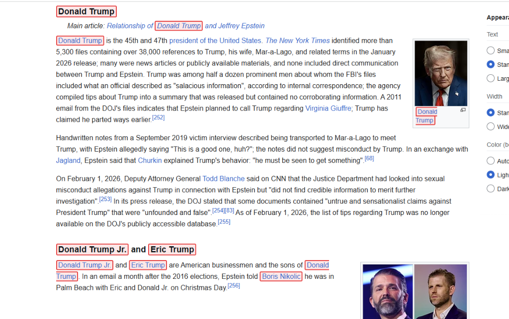

In action
What it looks like.
The extension highlights names directly in the page content without disrupting the reading experience.

Wikipedia — Names are highlighted in context, including headings and body text.

The extension works across all websites, adapting to both light and dark page styles.